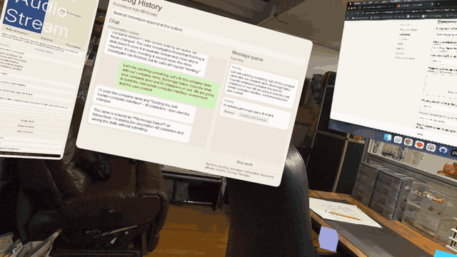
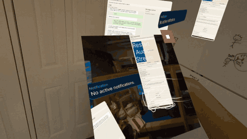
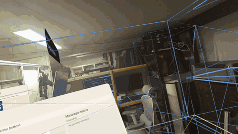
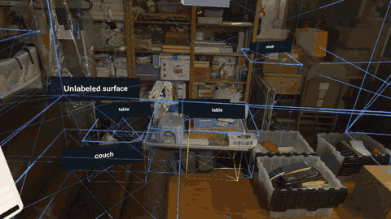
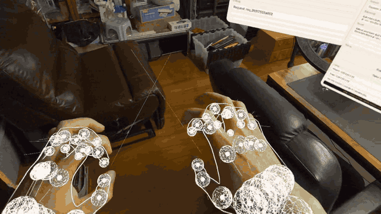

An open experiment · Development journal
Ada
Rethinking how we interact with computers.
An open exploration of spatial computing, AI, and human-computer interaction.
What if working with computers felt less like operating software and more like collaborating with another presence? This is Ada's development journal — experiments, breakthroughs, failures, and everything in between.
Latest prototype
Ada drives Chrome from inside the headset

From VR, Ada switches Chrome tabs on the Mac, fills our YC draft and helps write the answers — while wireless ADB reconnects itself and failures stop going silent.
Why it matters Working together starts to mean using the same tools: I can talk through a task from the headset while Ada operates Chrome on the Mac, with the final submission still in my hands.
Read this build note ↓Before the daily log
Four starts over two years
I've started Ada four times over two years — roughly two months of actual building. Each attempt was unlocked by a new tool, and this is the first time the technology and timing feel right.
- 012024
Hackathon prototype
A hackathon project powered by Gemini 1.5 first put Ada on screen.
- 02Spring 2025
Camera access
When camera access arrived on the Meta Quest, Ada could finally see the real room.
- 03May 2026
OpenClaw and computer use
The third attempt started in May 2026, building a complicated WebXR-to-OpenClaw communication layer and making the first attempt at computer use.
- 04October 2026
The current build
The fourth attempt is the current log: a real room, hands, voice, vision and Chrome control, one day at a time.
Read the current log ↓
The current log
-
Ada drives Chrome from inside the headset
- From VR, Ada switches Chrome tabs on the Mac, fills the YC draft and verifies the form after reload without submitting.
- Wireless ADB reconnects by itself at startup, with one bounded attempt and a fresh headset identity check.
- Named movement works — “move Ada to the whiteboard” — while pointing moves fail with an honest explanation instead of silence.
Why it matters Working together starts to mean using the same tools: I can talk through a task from the headset while Ada operates Chrome on the Mac, with the final submission still in my hands.
-
Ada gets eyes

- Ada gets eyes: a fresh Quest capture of the real room, including passthrough and virtual content, in a movable photo panel.
- Vision permission and wireless ADB become separate, measured states that expire when the connection goes stale.
- Mac screen sharing becomes a standalone, billboarded frame with move, resize, close and independent near/far interaction.
Why it matters A fresh headset capture gives Ada visual context from the room I'm in, so our conversation can refer to what I'm seeing as well as what I'm saying.
-
Keep listening, and Ada learns to move

- Keep listening: holding a raised index finger through a pause stops Ada cutting speech off.
- Ada relocates on command — “move to the server rack” glides her there with the ducklings following.
- The message queue is now visible and editable, and deletion no longer requires an exact magic phrase.
-
The room becomes editable

- The room becomes editable: select, rename, relabel and delete surfaces. Revision 5 kept 5 labels and removed 8 surfaces.
- Worker cubes appear beside Ada as real background tasks, driven by observations rather than animation.
- Speech and chat finally match, streaming updates as they arrive instead of one block at the end.
-
Ada grows hands

- All WebXR hand overlays at once: joint markers, radius spheres, orientation axes and aim rays, plus a cyan index-finger ray.
- The first developer preset saves the hand view to project memory; selectable presets are still missing.
- The browser panel lands in code — Mac Chrome inside XR with video, audio and input — though the first live test still ends with an interruption.
Why it matters Hands make the room addressable: pointing at a surface is a step toward sharing what I mean with Ada, without translating everything into words.
-
Ada, take four
- First working room workspace: import the scanned room, align it, place a persistent anchor and save the layout.
- A full reload restores the same room, with up to 64 named surfaces and 50 spatial notes.
- Fresh-only capture: historical replay omitted, payloads capped at 48 KB, secrets redacted and the private outbox enforced.